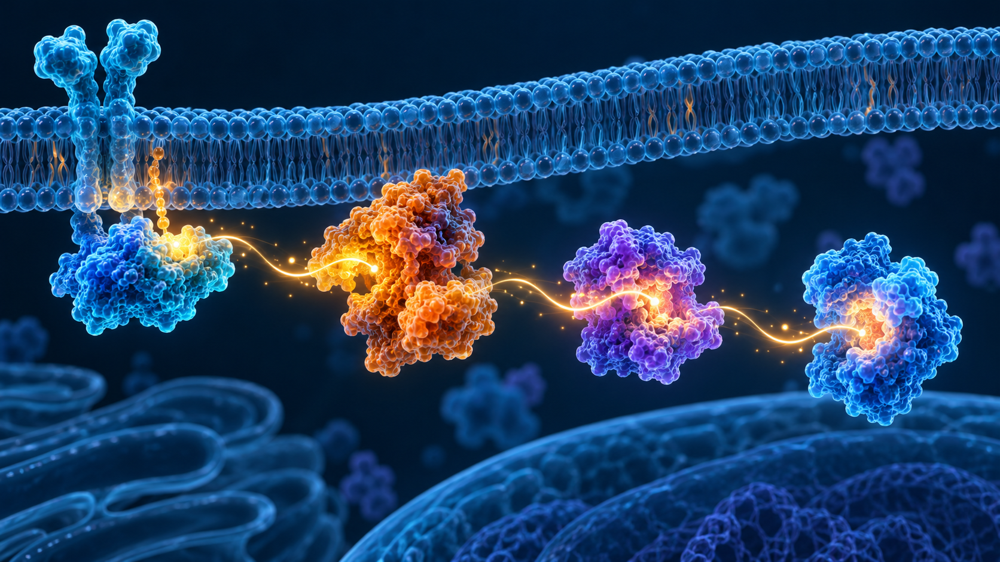
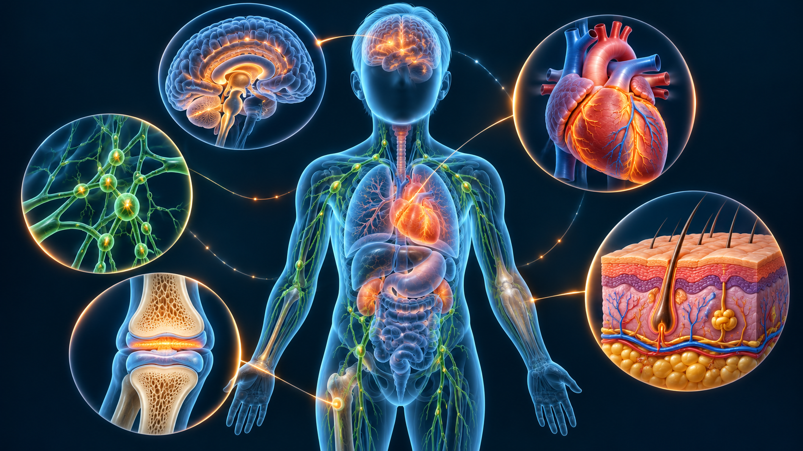
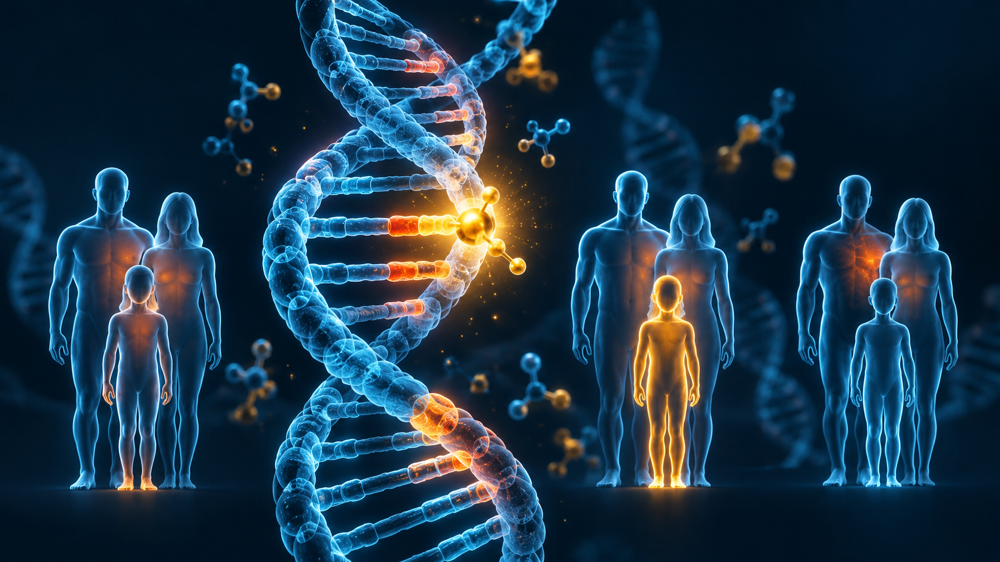
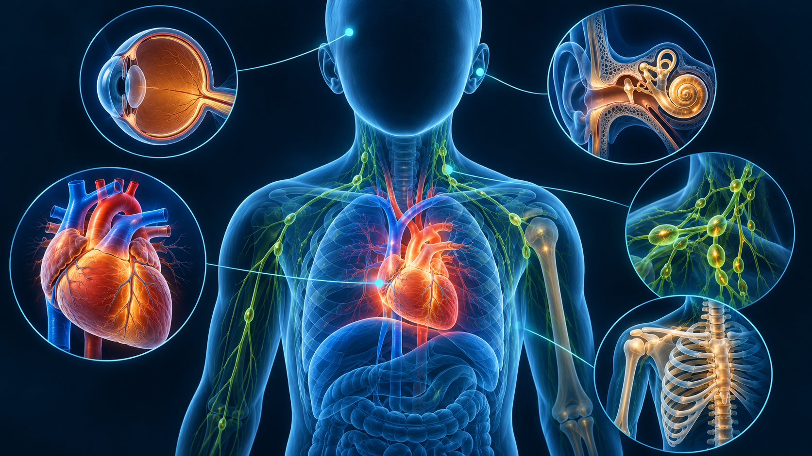
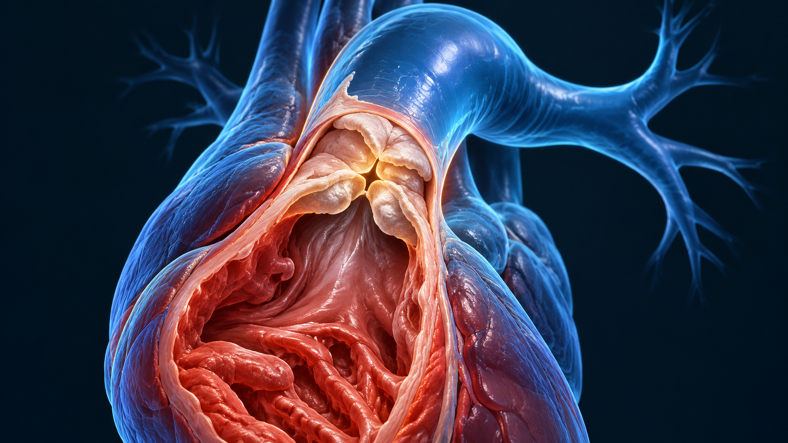
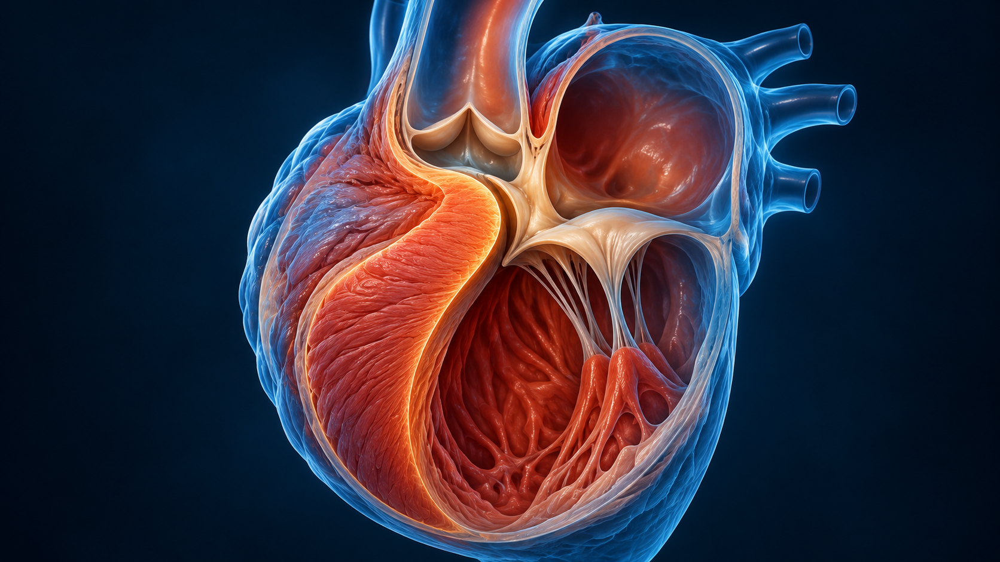
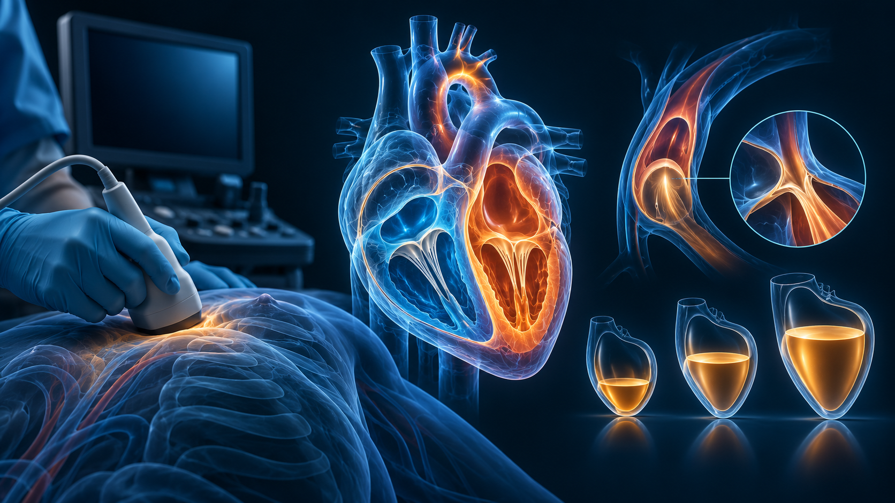
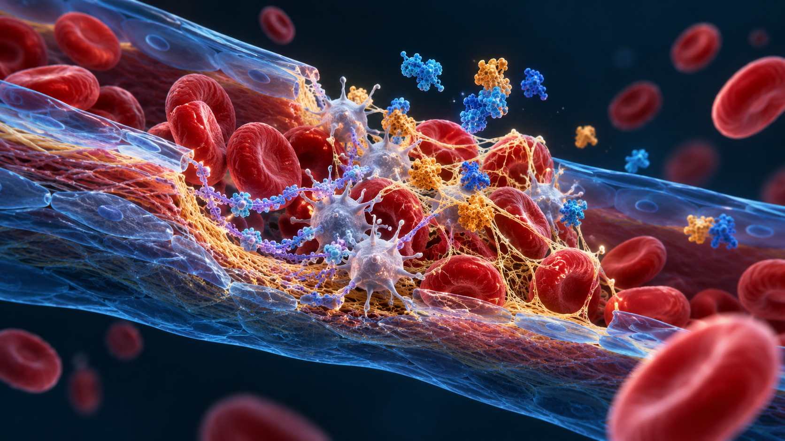
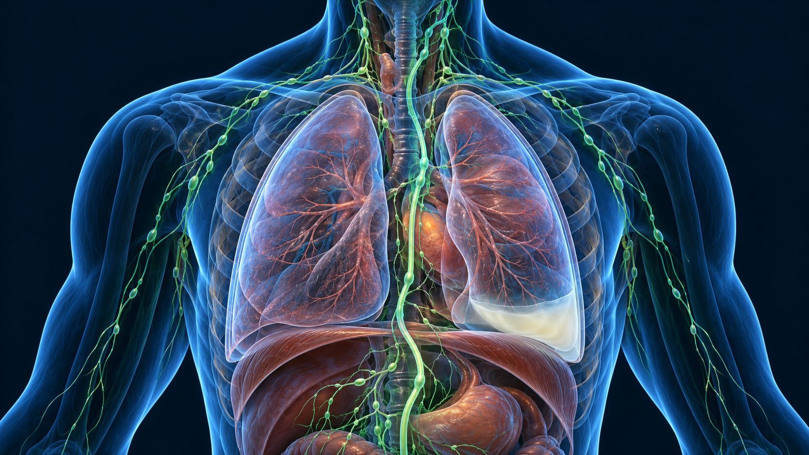

Qual é a fisiologia?
Reconheça cardiopatia e avalie função ventricular. CMH pode existir com ou sem obstrução da via de saída.
Noonan, Costello e síndromes neurocutâneas: conecte mecanismo molecular, manifestações e prioridades na UTI.

Reconheça cardiopatia e avalie função ventricular. CMH pode existir com ou sem obstrução da via de saída.
Epistaxe, equimoses e sangramento em procedimentos orientam a investigação. Triagem laboratorial normal não encerra a avaliação.
Considere alterações linfáticas; confirme a causa do derrame e avalie a repercussão respiratória.
Bases: GeneReviews [3] · OrphanAnesthesia [5].
A desregulação RAS/MAPK afeta crescimento e desenvolvimento. Uma via compartilhada ajuda a organizar o raciocínio; o diagnóstico específico define o acompanhamento.
| Condição | Genes exemplificativos | Âncora de estudo |
|---|---|---|
| Síndrome de Noonan | PTPN11, SOS1, RAF1, RIT1, LZTR1 | Cardiopatia, crescimento e envolvimento multissistêmico. |
| Noonan com múltiplas lentiginoses | PTPN11, RAF1 | Lentiginoses e atenção à cardiomiopatia. |
| Costello | HRAS | Alimentação, desenvolvimento, cardiopatia e vigilância própria. |
| Cardiofaciocutânea | BRAF, MAP2K1, MAP2K2, KRAS | Coração, pele/cabelos e neurodesenvolvimento. |
| Neurofibromatose tipo 1 | NF1 | Achados cutâneos e tumores associados à condição. |
| Legius | SPRED1 | Fenótipo pigmentar que pode se sobrepor ao de NF1. |
Bases: NIH [1] · NCI [2] · GeneReviews [3] · AACR [6]. A comparação não substitui critérios diagnósticos de cada síndrome.
PTPN11 é o gene mais frequente. A herança costuma ser autossômica dominante; LZTR1 admite formas dominantes e recessivas. O aconselhamento depende da variante e da família. [3]
Fenótipo variável e resultado molecular negativo podem exigir reavaliação. Não use ilustração facial como confirmação diagnóstica. [3]
Essas duas associações merecem atenção. Ecocardiograma e avaliação cardiológica definem repercussão e seguimento individual. [3]
Crescimento, desenvolvimento, audição, visão, linfáticos e necessidades psicossociais compõem o cuidado multidisciplinar. [3]
SPRED1 relaciona-se à síndrome de Legius. Variantes bialélicas em SPRED2 foram descritas em uma rara condição Noonan-like recessiva. Não são identificadores intercambiáveis. Estudo original [7].
Na CMH obstrutiva, evite hipovolemia, taquicardia e queda excessiva da pós-carga. Corrija hipovolemia com reavaliação; vasoconstritores sem efeito inotrópico, como fenilefrina, podem ser considerados pela equipe no contexto apropriado. Ecocardiografia orienta a avaliação.
Não generalize essa estratégia para todo choque em Noonan. [4]
Revise cardiopatia, via aérea, sangramentos prévios e exames. Alterações de fatores, von Willebrand e plaquetas podem requerer hematologia e plano específico. [5]
Costello pertence ao espectro RAS/MAPK. O diagnóstico específico orienta o seguimento; o plano de Noonan não deve ser transferido automaticamente.
Variantes patogênicas heterozigóticas germinativas em HRAS causam Costello. O padrão é autossômico dominante, geralmente por evento de novo; transmissão familiar é rara. Uma variante HRAS encontrada apenas em um tumor não estabelece a síndrome. [8]
Cardiomiopatia hipertrófica, cardiopatias estruturais e arritmias atriais — inclusive taquicardia atrial multifocal ou ectópica — são conexões importantes. Conheça o ecocardiograma e o histórico do ritmo antes de procedimentos. [8] [9]
Dificuldades alimentares importantes na infância, crescimento insuficiente, hipotonia e alterações do desenvolvimento merecem cuidado multidisciplinar. Avalie deglutição, aspiração, problemas respiratórios e, conforme a idade, hipoglicemia. [8] [9]
Há predisposição a rabdomiossarcoma, neuroblastoma e carcinoma urotelial da bexiga. Genética e oncologia devem definir vigilância específica por idade. A recomendação sobre hemogramas em Noonan assintomática não substitui o seguimento de Costello. [6] [9]
Facomatoses é uma denominação histórica para um grupo heterogêneo de síndromes neurocutâneas. Não define uma única via molecular, regra de herança ou estratégia de rastreamento. Achados de pele podem orientar a investigação, mas uma imagem isolada não confirma a condição. [10]
| Condição e mecanismo | Pistas clínicas | Atenção no plantão |
|---|---|---|
| Neurofibromatose tipo 1 NF1 · dominante; de novo e mosaico possíveis | Manchas café com leite, efélides intertriginosas e neurofibromas. | Investigue hipertensão por causas vasculares ou feocromocitoma. Dor nova persistente, tumor em crescimento rápido ou déficit neurológico exigem avaliação. [11] |
| Schwannomatose relacionada a NF2 NF2 · dominante; mosaicismo relevante | Nome atual da antiga “neurofibromatose tipo 2”. Schwannomas vestibulares, meningiomas e ependimomas. | Alterações auditivas, de equilíbrio ou déficits neurológicos novos orientam avaliação especializada. Não confundir com NF1. [12] [16] |
| Complexo de esclerose tuberosa — CET TSC1/TSC2 · dominante; de novo e mosaico possíveis · mTOR | Lesões cutâneas, epilepsia, angiomiolipomas renais, rabdomiomas cardíacos e linfangioleiomiomatose (LAM). | Reconheça crises prolongadas, sangramento renal e pneumotórax ou comprometimento respiratório associado à LAM. [13] [17] |
| Síndrome de von Hippel–Lindau — VHL VHL · dominante; casos de novo e mosaico existem | Hemangioblastomas do SNC/retina, carcinoma renal de células claras e feocromocitoma, entre outras lesões. | Sintomas neurológicos novos e hipertensão paroxística ou instabilidade compatível com excesso de catecolaminas exigem investigação dirigida. [14] |
| Síndrome de Sturge–Weber Tipicamente GNAQ somático pós-zigótico · mosaico · geralmente não herdada | Malformação capilar cutânea, envolvimento leptomeníngeo e glaucoma, em combinações variáveis. | Crise prolongada ou déficit focal novo requer avaliação urgente. Uma mancha facial isolada não estabelece a síndrome. [15] [18] |
Ilustrações conceituais geradas por IA. O texto e as fontes apresentam a interpretação clínica; a anatomia ilustrada não deve ser usada como exame. Selecione um tema ou amplie a imagem original.
10 de 10 imagens
RAS → RAF → MEK → ERK é um esquema simplificado da cascata. Variantes em reguladores distintos podem alterar desenvolvimento e crescimento.

Noonan, Costello, cardiofaciocutânea, NF1 e Legius se sobrepõem, mas não têm o mesmo seguimento nem o mesmo risco tumoral.

A maioria das formas de Noonan é dominante; LZTR1 pode ter herança dominante ou recessiva. Casos de novo também ocorrem.

Examine crescimento, tórax, linfáticos e desenvolvimento; inclua audição e visão. Aparência isolada não confirma uma síndrome.

A estenose valvar pulmonar é uma associação importante em Noonan. O ecocardiograma define anatomia, repercussão e seguimento.

A cardiomiopatia hipertrófica pode ocorrer com ou sem obstrução. Não presuma obstrução dinâmica apenas pelo diagnóstico de Noonan.

Na CMH obstrutiva, hipovolemia, taquicardia e queda da pós-carga podem piorar a obstrução. Reavalie com ecocardiografia.

História hemorrágica importa. Defeitos de fatores, von Willebrand e função plaquetária podem exigir investigação especializada.

Linfedema e derrames quilosos integram o espectro. Um derrame em paciente com Noonan ainda exige diagnóstico diferencial.
História, exame, teste molecular e aconselhamento se complementam. O plano de cuidado acompanha as manifestações e a idade.
Nenhuma imagem encontrada. Limpe a busca ou selecione “Todas”.
Questões autorais de revisão; não são questões oficiais da AMIB. Faça uma por vez e explique a resposta em voz alta.
LZTR1 pode estar associado a formas dominantes ou recessivas.
O gene e a variante precisam ser interpretados no contexto familiar. “Genético” não significa necessariamente herdado dos pais. Fonte [3]
Não. A história hemorrágica e a avaliação dirigida continuam relevantes.
Alterações de função plaquetária ou de von Willebrand podem escapar à triagem básica. A estratégia depende do procedimento e da hematologia. Fonte [5]
Não. Defina o mecanismo e procure obstrução quando houver suspeita.
Sepse, disfunção ventricular e outras causas também ocorrem. A conduta para CMH obstrutiva não deve ser generalizada. Fonte [4]
Não. A síndrome, o genótipo e os achados orientam o seguimento.
A AACR 2024 retirou hemogramas seriados de vigilância para crianças com Noonan clinicamente saudáveis e assintomáticas; sinais de mieloproliferação exigem investigação. Fonte [6]
Não necessariamente. A avaliação genética deve integrar todos os achados.
Cobertura do teste, heterogeneidade genética e diagnósticos diferenciais podem justificar reanálise especializada. Fonte [3]
Não. SPRED1 está ligado a Legius; SPRED2 bialélico foi descrito em condição Noonan-like rara.
Preserve o identificador do gene ao estudar. Uma letra ou número pode mudar o diagnóstico e o aconselhamento. Fonte [7]
Não. Costello exige vigilância própria, ajustada à idade e às manifestações.
A predisposição tumoral e as recomendações são específicas; o seguimento de uma rasopatia não deve ser aplicado automaticamente a outra. Fonte [9]
Schwannomatose relacionada a NF2.
O consenso de 2022 atualizou a nomenclatura e reforçou a importância dos achados moleculares e do mosaicismo. Fonte [16]
Não. Sturge–Weber é tipicamente decorrente de mosaicismo somático pós-zigótico em GNAQ.
Uma condição genética pode ocorrer sem transmissão familiar mendeliana. O aconselhamento depende da síndrome e do mecanismo. Fonte [18]
Hemorragia de angiomiolipoma renal.
Avalie essa possibilidade sem abandonar a investigação das demais causas de instabilidade. CET também pode envolver pulmões, coração e sistema nervoso. Fonte [13]
Genes, herança e manifestações gerais.
Espectro das rasopatias; comparação introdutória.
Diagnóstico clínico/molecular, manifestações e acompanhamento. A vigilância hematológica foi confrontada com AACR 2024.
CMH: evitar hipovolemia, taquicardia e redução da pós-carga; ecocardiografia e vasoconstritor em hipotensão selecionada.
Risco hemorrágico, via aérea e planejamento anestésico.
Rasopatias, incluindo NF1 e Costello; vigilância por síndrome e recomendação específica sobre Noonan/CBL.
Estudo original: rara rasopatia recessiva relacionada a SPRED2.
Genética HRAS, fenótipo, coração, crescimento e aconselhamento. Revisão abrangente 2023; alteração adicional em maio de 2026.
Diretriz de manejo multissistêmico e avaliação perioperatória de Costello.
Enquadramento de facomatoses como síndromes neurocutâneas heterogêneas.
NF1: achados clínicos, genética, hipertensão, vasculopatia e sinais de alerta tumoral.
Schwannomas vestibulares, outros tumores, herança e mosaicismo.
TSC1/TSC2, via mTOR e manifestações neurológicas, renais, cardíacas e pulmonares.
VHL: hemangioblastomas, tumores renais e feocromocitoma; acompanhamento específico.
GNAQ somático pós-zigótico, manifestações variáveis e padrão geralmente não herdado.
Consenso internacional que adotou a denominação schwannomatose relacionada a NF2.
Recomendações multissistêmicas e avaliações orientadas por órgão e idade.
Estudo original que relacionou mosaicismo somático em GNAQ à síndrome de Sturge-Weber.
Fontes consultadas em 18–19/10/2026. Síntese educacional original assistida por IA; revisão médica humana e homologação assistencial pendentes.